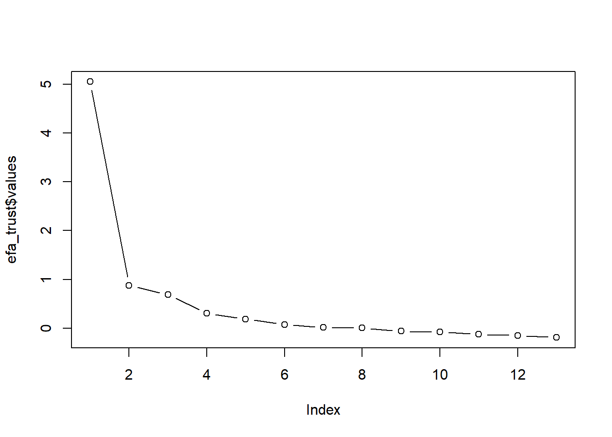
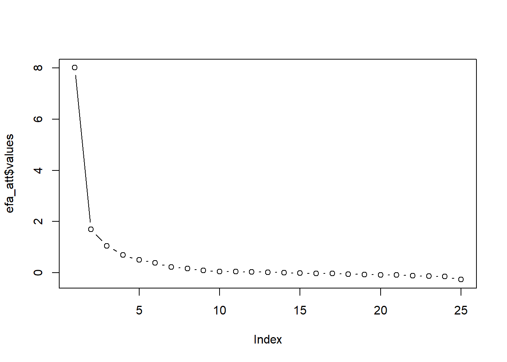

6.1 Loading data
In the unlikely event that you were able to replicate the results of Kestilä, load the environment of the take-home exercise of week 2. In case you have not saved the environment, you can just load and re-run your script of the take-home exercise.
If you did not manage to replicate the results, go to blackboard and download ESSround1-b.sav and load this dataset into RStudio.
Click for explanation
6.1.1 Question 1
Kestilä states that running a Principal Components Analysis is a good way to test whether the survey questions in the ESS measure attitudes towards immigration and trust in politics. What would Preacher and MacCallum (2003) say about this?
Click for information
*Hint: If you are working in R studio, you can simply add an # before each line of your answer, so that you will have all information inside the same document, without R thinking that it will have to run the code.
6.1.2 Question 2
If you would have to choose a method for constructing the ‘trust in politics’ and ‘attitude towards immigration’ scales based on the theory and background information in the Kestilä article, what type of factor analysis would you choose? Think about:
- Estimation method
- Rotation method
- Method to establish how many factors are needed
6.1.3 Question 3
Run two factor analyses, one for each PCA of the original article. Inspect the number of factors necessary, evaluate the rotation method, and if necessary, run the factor analysis again with adapted settings (rotation method and/or different number of factors). How many factors are there?
Click for explanation
First, you will have to create a new data object containing only the countries of interest in which all variables are numeric.
However, using this command, R will still see the excluded countries as factor levels, which will result into problems when you are going to replicate the study by Kestilä. To drop these factor levels completely, use the following command.
You also want to adjust the variables of interest to numeric once again.
To perform an exploratory factor analysis, you can use the function fa of the package psych. You will have to specify the data, and the variables that you want to include in the factor analyses. Furthermore, you will have to specify the number of factors that you want to extract, the rotation method and the estimation method.
library(psych)
library(GPArotation)
efa_trust <- fa(df[, 7:19], nfactors = 3, rotate = "promax", fm = "ml", scores = "Bartlett")In order to determine the number of factors to extract, you might want to look at the eigenvalues of the factors or the scree plot. These information can be accessed by using the following code:
## [1] 5.054 0.874 0.687 0.304 0.185 0.076 0.014 0.008 -0.060 -0.078
## [11] -0.123 -0.149 -0.191
You will have to do the same for the attitude variables.
library(psych)
library(GPArotation)
efa_att <- fa(df[, 20:44], nfactors = 5, rotate = "promax", fm = "ml", scores = "Bartlett")And for information about the number of factors, you can use the following commands.
## [1] 8.016 1.702 1.051 0.697 0.500 0.389 0.218 0.162 0.091 0.046
## [11] 0.043 0.028 0.022 0.008 -0.018 -0.028 -0.032 -0.056 -0.066 -0.083
## [21] -0.089 -0.119 -0.132 -0.146 -0.266
6.1.4 Question 4
Apart from the number of factors, you also want to look at the factor loadings. They can be found in the “pattern matrix”. The higher the factor loadings are, the more indicative an item is for the latent factor. If you find some items to have only very low loadings (indicating that the items do not provide much information about the factor), you may choose not to include them in your analysis. This means you have to rerun the analysis under question 3.
Click for explanation
You can find the factor loadings by means of the ‘print’-function used in the take-home exercise, or you can search for the variable ‘loadings’, which is inside the results object, to end up with just the information you are searching for.
##
## Loadings:
## ML1 ML2 ML3
## pltcare 0.784 -0.126
## pltinvt 0.783 -0.131
## trstprl 0.528 0.101 0.258
## trstlgl 0.827
## trstplc -0.157 0.800
## trstplt 0.713 0.116
## trstep 0.432 0.303
## trstun 0.343 0.366
## stfeco 0.128 0.725 -0.129
## stfgov 0.270 0.640 -0.132
## stfdem 0.201 0.479 0.129
## stfedu -0.166 0.665 0.104
## stfhlth -0.137 0.632
##
## ML1 ML2 ML3
## SS loadings 2.518 2.035 1.725
## Proportion Var 0.194 0.157 0.133
## Cumulative Var 0.194 0.350 0.483##
## Loadings:
## ML3 ML1 ML5 ML4 ML2
## imsmetn 0.479 0.403
## imdfetn 0.321 0.563
## eimrcnt 1.110 -0.187
## eimpcnt 0.345 0.665
## imrcntr 0.798
## impcntr 0.259 0.727
## qfimchr 0.126 0.867
## qfimwht 0.114 0.749
## imwgdwn 0.511 0.182
## imhecop 0.560 0.153
## imtcjob 0.712 0.138
## imbleco 0.702 0.162
## imbgeco 0.740
## imueclt 0.470 -0.166 -0.166
## imwbcnt 0.639 -0.169
## imwbcrm 0.515 -0.177 0.101
## imrsprc 0.534 0.159
## pplstrd 0.245 -0.365
## vrtrlg -0.115 0.186 0.270
## shrrfg 0.302 -0.280
## rfgawrk 0.474
## gvrfgap 0.752
## rfgfrpc 0.219 -0.255
## rfggvfn 0.489
## rfgbfml 0.632
##
## ML3 ML1 ML5 ML4 ML2
## SS loadings 3.271 2.397 2.061 1.648 1.549
## Proportion Var 0.131 0.096 0.082 0.066 0.062
## Cumulative Var 0.131 0.227 0.309 0.375 0.437The output above might appear slightly confusing, due to the jumble of factor loadings. To create more clarity, it is convenient to suppress the factor loadings that are lower than .30.
##
## Loadings:
## ML1 ML2 ML3
## pltcare 0.78
## pltinvt 0.78
## trstprl 0.53
## trstlgl 0.83
## trstplc 0.80
## trstplt 0.71
## trstep 0.43 0.30
## trstun 0.34 0.37
## stfeco 0.73
## stfgov 0.64
## stfdem 0.48
## stfedu 0.67
## stfhlth 0.63
##
## ML1 ML2 ML3
## SS loadings 2.52 2.03 1.72
## Proportion Var 0.19 0.16 0.13
## Cumulative Var 0.19 0.35 0.48Furthermore, if you want to perform a factor analysis without, say, trstep, while you want all other variables included in your factor analysis, you can simply leave the column number of trstep, which is 13, out of the command:
6.1.5 Question 5
Give the factor scores an appropriate name. You can do this by inspecting the items that load on one factor. What do these items have in common substantively? The goal of a factor analysis usually is to create interpretable factors. If you have trouble interpreting the factors, you can choose to tweak the analysis by changing the options, or including/excluding more items.
Furthermore, after you named the factor scores accordingly, extract them from the results object and add them to the data.frame.
Hint: If you do not know how to do this, have a look at question 1.h from the take-home exercise of week 2.
Please note that the colnames will be specified from left to right, and not, for example, from ML1 to ML5.
6.1.6 Question 6
The next step is to assert whether the items that together form one factor, also form a reliable scale. Run separate reliability analyses by means of the function alpha for the items that together form one factor, and evaluate Cronbach’s alpha to see whether the scales are internally consistent. The “Reliability if an item is dropped (alpha.drop)” information may be handy to inspect what would happen if you would delete one item; you can find it inside the reliability analysis object. If Cronbach’s alpha is not ok, deselect one survey item and run the analyses under question 4 and question 5 again.
Hint: Cronbach’s alpha > .7 are deemed to be ok, > .8 is good.
If Cronbach’s alpha is not ok, deselect one survey item and run the analyses under question 4 and question 5 again.
Click for explanation
If you want to assess the reliability of the variables pltcare, pltinvt, trstprl, trstplt, and trstep you can run a reliability analysis as follows.
Hint: name the new objects substantively, instead of numbering them.
##
## Reliability analysis
## Call: psych::alpha(x = df[, c(7, 8, 9, 12, 13)])
##
## raw_alpha std.alpha G6(smc) average_r S/N ase mean sd median_r
## 0.8 0.83 0.82 0.49 4.8 0.0019 4.4 1.4 0.52
##
## lower alpha upper 95% confidence boundaries
## 0.8 0.8 0.81
##
## Reliability if an item is dropped:
## raw_alpha std.alpha G6(smc) average_r S/N alpha se var.r med.r
## pltcare 0.79 0.80 0.77 0.50 4.0 0.0021 0.017 0.52
## pltinvt 0.80 0.81 0.78 0.51 4.2 0.0021 0.016 0.53
## trstprl 0.73 0.78 0.76 0.47 3.6 0.0027 0.018 0.52
## trstplt 0.70 0.75 0.73 0.43 3.1 0.0031 0.014 0.43
## trstep 0.78 0.82 0.80 0.53 4.6 0.0021 0.010 0.52
##
## Item statistics
## n raw.r std.r r.cor r.drop mean sd
## pltcare 17975 0.66 0.75 0.67 0.56 2.6 1.1
## pltinvt 17971 0.64 0.74 0.65 0.54 2.4 1.1
## trstprl 17753 0.84 0.80 0.74 0.69 6.3 2.3
## trstplt 17966 0.88 0.86 0.83 0.77 5.3 2.2
## trstep 16390 0.77 0.70 0.59 0.57 5.6 2.3In the hypothetical scenario that Cronbach’s alpha increases when you drop a variable out of the analysis, you can rerun your analysis without that specific variable. So for a version without variable trstprl, see the example below.
6.1.7 Question 7
Now you can analyze the differences between the factor scores for the PCA analysis (take-home exercise 2) and the EFA by plotting them in a series of scatterplots (bivariate). This can be done by means of the package ggplot2. The PCA factor scores are already stored in the dataset ESSround1-b.sav.
Click for explanation
Make sure to adjust the variable names to the variables names of your own.

6.1.8 Question 8
Build correlation matrices (PCA and EFA versions) of first the ‘trust in politics’ scores, and then the ‘immigration’ factor scores. What is your conclusion: is there a difference between them?
Click for explanation
Hint: Name the new objects substantively once again.
## [1] 0.93759656.1.9 Question 9
Kestila uses the PCA factor scores to evaluate country level differences in 1. Attitudes towards immigration and 2. Political trust. Repeat her analyses using the factor scores you saved in step 5. Think about the statistical test you would like to use. Do you draw similar or different conclusions?
Click for explanation
We can use an ANOVA to test whether the countries differ in the amount of political trust the participants have.
## Df Sum Sq Mean Sq F value Pr(>F)
## cntry 8 1740 217.55 199.6 <2e-16 ***
## Residuals 14769 16100 1.09
## ---
## Signif. codes: 0 '***' 0.001 '**' 0.01 '*' 0.05 '.' 0.1 ' ' 1
## 3409 observations deleted due to missingnessIn which trustinstEFA is the dependent variable, cntry is the grouping variable, and df is the name of the dataset; summary will provide the results. However, it will only indicate whether the variable cntry is significant or not, so you will be unable to tell which countries differ in terms of their political trust. To tell which countries differ, you can do a pairwise comparison test, with a Bonferroni adjustment for multiple testing.
pair_comparison <- pairwise.t.test(df$trustinstEFA, df$cntry, p.adjust.method = "bonf", na.rm = TRUE)
round(pair_comparison$p.value, digits = 3)## Austria Belgium Germany Denmark Finland Italy Netherlands
## Belgium 0.000 NA NA NA NA NA NA
## Germany 0.033 0 NA NA NA NA NA
## Denmark 0.000 0 0 NA NA NA NA
## Finland 0.000 0 0 0.085 NA NA NA
## Italy 1.000 0 1 0.000 0 NA NA
## Netherlands 0.000 0 0 0.000 0 0.000 NA
## Norway 0.000 0 0 0.000 0 0.000 0
## Sweden 0.231 0 0 0.000 0 0.144 0
## Norway
## Belgium NA
## Germany NA
## Denmark NA
## Finland NA
## Italy NA
## Netherlands NA
## Norway NA
## Sweden 0.0056.1.10 Question 10
The second goal of Kestilä is to show how socio-demographic characteristics affect attitudes towards immigrants and trust in politics in Finland. Select only the Finnish cases using the variable cntry. Next, run a number of multiple linear regression analyses with the (sub-)scales of attitudes towards immigrants and political trust as subsequent dependent variables, and the same predictors as Kestilä. Inspect your output.
Compare your results with the results from Kestilä. How do your results differ or agree with the results by Kestilä?
Click for explanation
To select the Finnish cases only:
Although we have selected the Finnish cases, we still have to do some recoding. Since not the age of the participants is listed, but the year of birth, we have to recode this variable. Due to the fact that yrbrn was originally coded as a factor, we first have to create a numerical object based on the factor labels. Since the data originated from 2002, we can simply extract the year of birth of every participant from the year 2002.
The same holds for the variables eduyrs and lrscale, to prevent R from making dummies for all distinct values.
df_finland$age <- as.numeric(as.character(df_finland$yrbrn))
df_finland$age <- (2002 - df_finland$age)
df_finland$eduyrs <- as.numeric(df_finland$eduyrs)
df_finland$lrscale <- as.numeric(df_finland$lrscale)Fortunately, R creates a dummy for the variables gndr and polintr automatically. However, if you want to run the same analysis as Kestilä, you will have to recode polintr in such a way that there are only two categories, since R will go for a solution with one dummy per category by default. After you have done the recoding, you can replicate Kestiläs analysis.
df_finland$polintr_dummy <- as.numeric(df_finland$polintr)
df_finland$polintr_dummy <- as.numeric(df_finland$polintr_dummy <= 2)
df_finland$polintr_dummy <- factor(df_finland$polintr_dummy,
levels = c(0,1),
labels = c("Not or hardly interested",
"Quite or very interested"))fit_trust1 <- lm(trustinstEFA ~ gndr + age + eduyrs + polintr_dummy + lrscale, data = df_finland, na.action = na.omit)
summary(fit_trust1)##
## Call:
## lm(formula = trustinstEFA ~ gndr + age + eduyrs + polintr_dummy +
## lrscale, data = df_finland, na.action = na.omit)
##
## Residuals:
## Min 1Q Median 3Q Max
## -4.0364 -0.4740 0.1394 0.6379 2.3394
##
## Coefficients:
## Estimate Std. Error t value
## (Intercept) -0.169767 0.131134 -1.295
## gndrFemale -0.010228 0.044386 -0.230
## age -0.001053 0.001356 -0.776
## eduyrs 0.027904 0.006277 4.445
## polintr_dummyQuite or very interested 0.090948 0.045642 1.993
## lrscale 0.051650 0.011037 4.680
## Pr(>|t|)
## (Intercept) 0.1956
## gndrFemale 0.8178
## age 0.4377
## eduyrs 9.34e-06 ***
## polintr_dummyQuite or very interested 0.0465 *
## lrscale 3.10e-06 ***
## ---
## Signif. codes: 0 '***' 0.001 '**' 0.01 '*' 0.05 '.' 0.1 ' ' 1
##
## Residual standard error: 0.9159 on 1734 degrees of freedom
## (260 observations deleted due to missingness)
## Multiple R-squared: 0.03377, Adjusted R-squared: 0.03099
## F-statistic: 12.12 on 5 and 1734 DF, p-value: 1.454e-116.1.11 Question 11
Save your syntax and your data, you will need it next week.